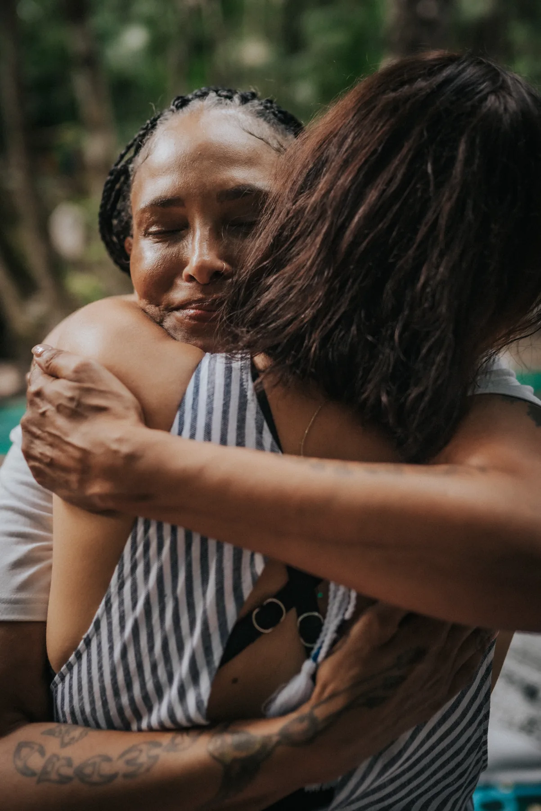
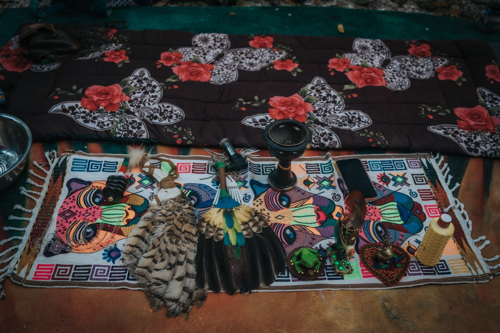
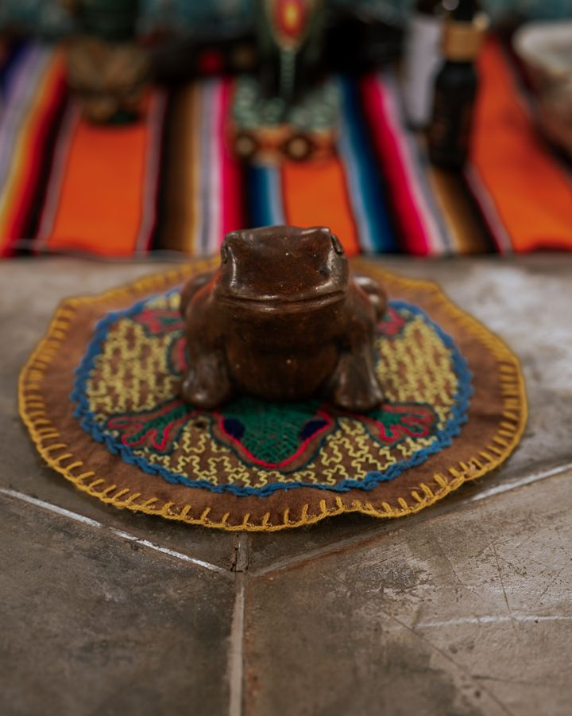
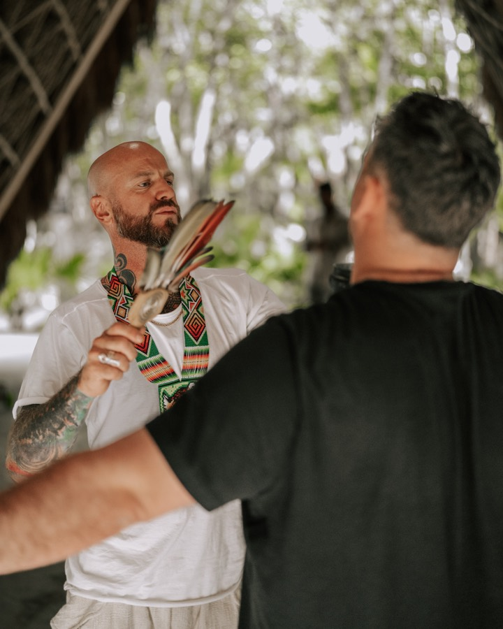
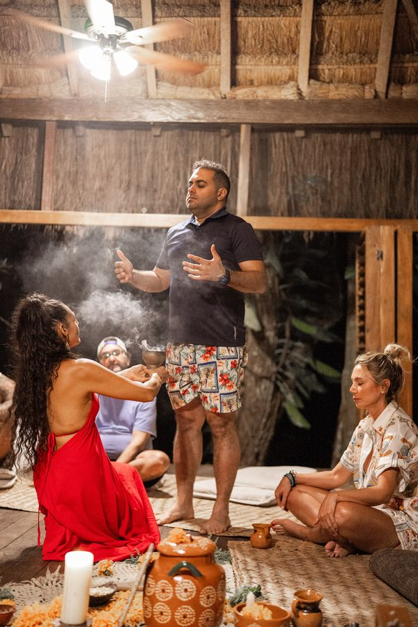
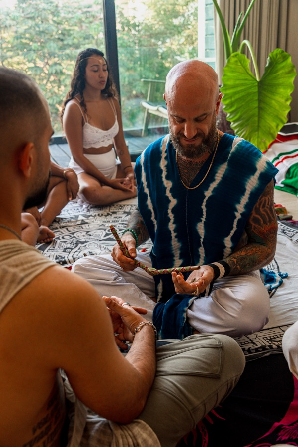
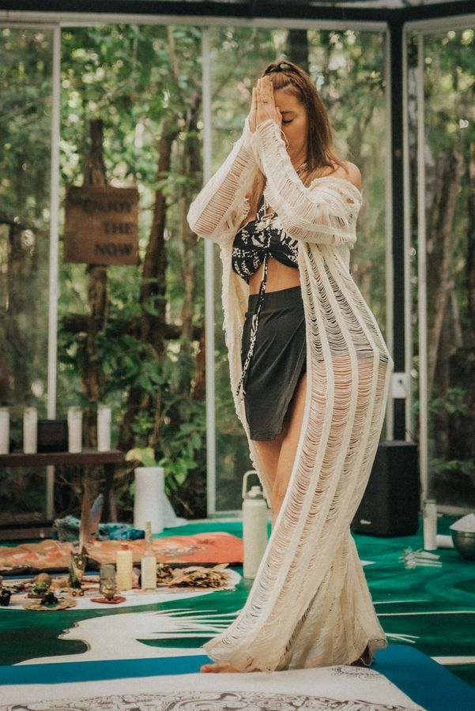
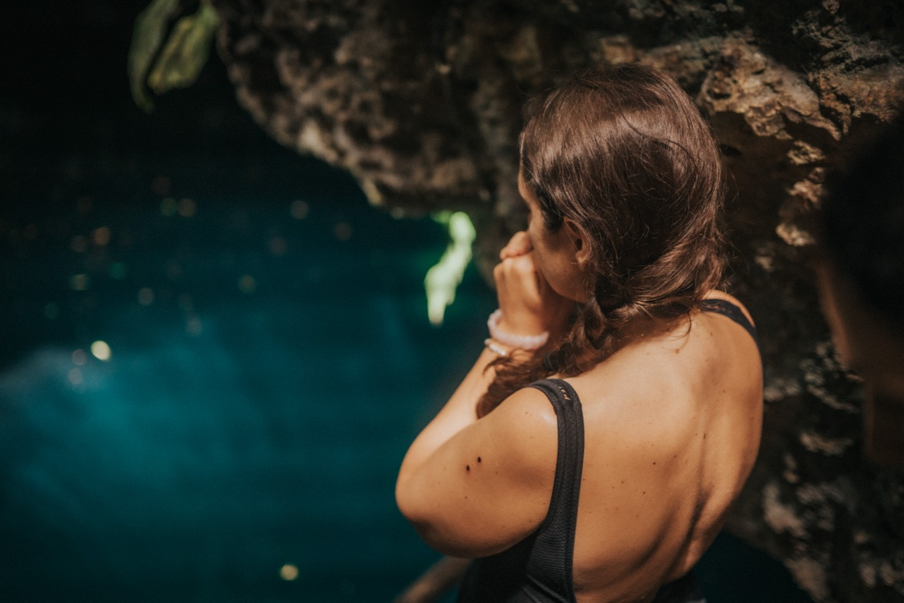
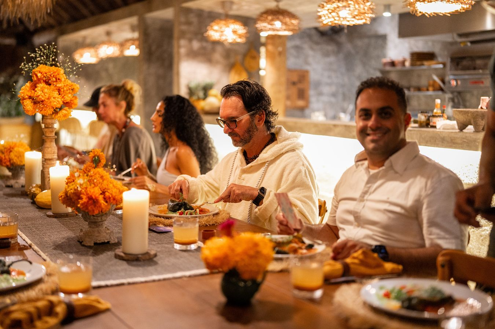
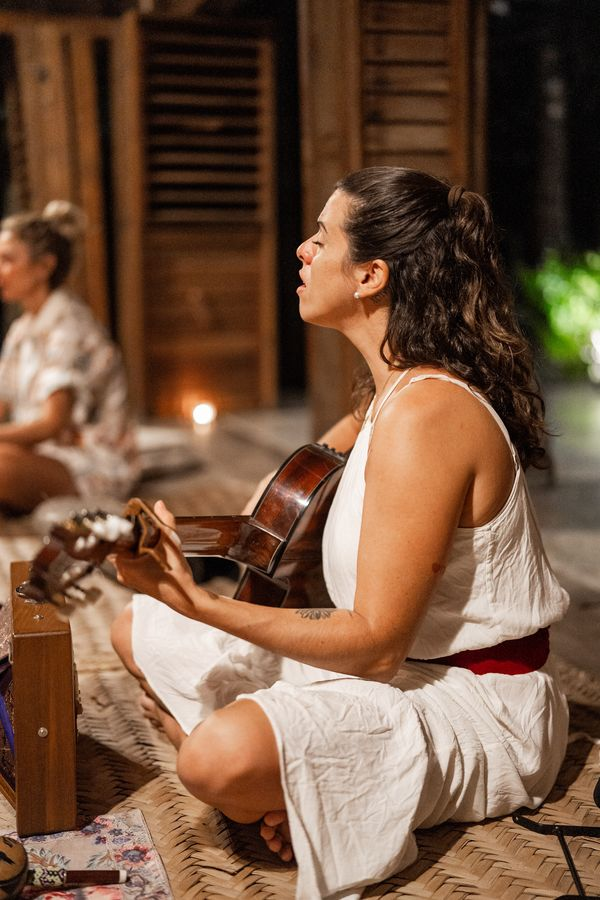

Individual
$2,200 USD
One place, four days, everything above included.
The Reclamation Retreat
Four days in Tulum — ceremony, connection, embodied healing, and the kind of integration that follows you home.

From a past Tiger Soul retreatA Four-Day Immersion
An intimate four-day experience of ceremony, conscious connection, embodied healing, and meaningful integration — set in the jungle, turquoise water, and ancient land of Tulum. Every element is chosen to support one arc: arrival, surrender, embodiment, return.
For four days a private villa belongs to us. It's where we sleep, where we eat, where ceremony is held, and where you rest afterward — no lobbies, no strangers, no need to leave the container to find a quiet corner.
The Itinerary
Open any day to see it hour by hour. Nothing is rushed, and nothing is asked of you before you're ready for it.
Settle in, meet the group, and let your nervous system land.
Plant-based food in Tulum's best-loved jungle wellness space.
Name what called you here, and what you're ready to release.
An offering, and permission asked before any ceremonial work.
Quiets the mind and releases the travel before the day ahead.
The intention: safety, trust, and a body ready for what comes next.
Embodied movement, fresh juice, and a guided intention practice.
Crystal bowls and voice, held at your own pace and consent.
Rest, swim, journal, or take a private facilitator check-in.
Held individually, with the group holding presence around you.
Familiar food, a quiet villa, and witnessing without advice.
The intention: a protected space to surrender, release, and meet who you are underneath it all.
Restorative movement, then reflection on what the day revealed.
Smoothie bowls and superfoods in a relaxed tropical setting.
A heart-shaped freshwater cenote — swim, float, come back to the body.
An unhurried return to the villa, with one-to-one time if you want it.
Bare feet in the sand and the horizon wide open.
Open-fire cooking at a MICHELIN Guide–recognized Tulum institution.
The intention: turn insight into embodiment, and choose what you're committing to.
Modern Mexican cooking beside a private jungle cenote.
One word for what you're taking home, your commitment, and a keepsake.
One last photograph, goodbyes, and transfers to the airport.
The intention: completion, anchoring, and a clear sense of what comes next.
What's Included
From the moment you land to the moment you fly home, every detail is cared for — so your only work is the work you came to do.
Investment
Preparation & Integration
You're prepared for weeks before you fly, and supported for a month after you land back home. All of it is included.
You won't arrive cold. Everyone is screened, prepared, and taught what they're walking into, so the first day in Tulum isn't the first time you've thought about any of it.
In a few weeks you'll be back in the same rooms with the same people, and that's where this actually gets decided. So we stay with you — as a group, and one to one.
Past Gatherings









Your Invitation
This retreat is for people who can feel that something in them is ready to change. Spaces are limited and held with care — every journey begins with a simple health screening, so your safety and readiness are honored from the start.